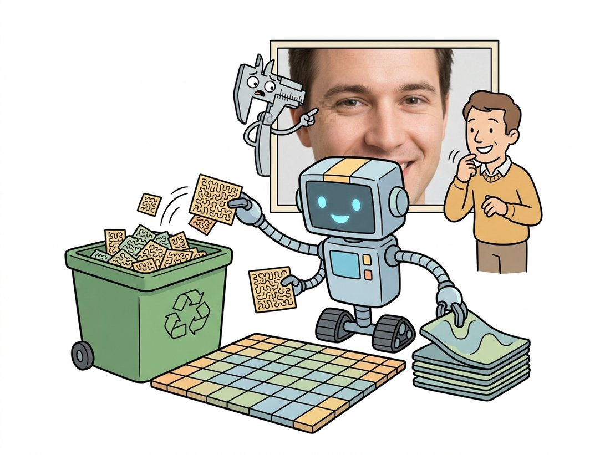

"I divided the image into 8 by 8 blocks and threw away what nobody would miss. Apparently somebody missed it."
A Remorseful JPEG Quantizer
A file format is a contract about acceptable loss: lossless formats promise your array back bit for bit, lossy formats promise only that a human will not mind the difference, and vision systems are not humans. JPEG's artifacts were tuned against human eyes in 1991; your segmentation labels, your measurement pipelines, and to a measurable degree your neural networks all care about exactly the information JPEG throws away. This section opens the formats you use daily, shows how to measure what compression costs, and gives you defensible rules for choosing.
This section is where the whole chapter cashes in. Section 1.4 gave us YCbCr and chroma subsampling; Section 1.2 gave us quantization; Section 1.3 gave us bit depth; and the frequency-domain view that completes the picture is coming in Chapter 4. JPEG is precisely these ideas composed into one pipeline, which is why we can now read it end to end. But first, the cleaner half of the world: formats that throw nothing away.
1. Lossless Storage: PNG Beginner
A lossless format guarantees that decode(encode(image)) equals the original array exactly. PNG, the workhorse, achieves compression in two stages: first a per-row prediction filter (each scanline is rewritten as differences from already-decoded neighbors, using one of five predictors chosen per row), then the generic DEFLATE compressor over the residuals (DEFLATE is the same lossless, fully reversible scheme used inside ZIP and gzip: it finds repeated byte patterns and assigns shorter codes to more frequent symbols). Prediction is what makes it work on images: natural rows resemble their neighbors, so residuals are small and highly compressible. PNG supports 8-bit and 16-bit channels, grayscale, RGB, indexed palettes, and an alpha channel, which makes it the default answer for anything synthetic or anything that is secretly data: charts, UI screenshots, depth maps, and above all annotation masks.
Code 1.5.1 demonstrates the single most important format rule in this book with a 12-line experiment: round-trip a segmentation label mask through JPEG and through PNG, and count how many labels change.
import cv2
import numpy as np
# A binary segmentation label: class 1 inside a square, class 0 outside.
mask = np.zeros((128, 128), np.uint8)
mask[32:96, 32:96] = 1
# Round trip through JPEG (stored scaled to 0/255, as masks often are).
ok, buf = cv2.imencode(".jpg", mask * 255, [cv2.IMWRITE_JPEG_QUALITY, 90])
back = cv2.imdecode(buf, cv2.IMREAD_GRAYSCALE)
relabeled = (back > 127).astype(np.uint8)
print("JPEG round trip: labels changed at",
int((relabeled != mask).sum()), "pixels")
# Round trip through PNG.
ok, buf = cv2.imencode(".png", mask)
back_png = cv2.imdecode(buf, cv2.IMREAD_GRAYSCALE)
print("PNG round trip: labels changed at",
int((back_png != mask).sum()), "pixels")
JPEG round trip: labels changed at 96 pixels
PNG round trip: labels changed at 0 pixels
Photographs degrade gracefully under lossy compression; label maps, masks, depth images, flow fields, and medical measurements do not, because their values are categorical or metric, not perceptual. The rule: if a pixel's exact value will ever be compared, counted, indexed, or trained against (as segmentation labels are in Chapter 24), store it losslessly. A surprising number of public datasets violated this rule early on, and their boundary-pixel label noise is now permanent.
2. JPEG: This Chapter, Composed Into a Codec Intermediate
JPEG earns its 10:1 to 20:1 compression by spending the chapter's entire toolkit against human perception. Figure 1.5.1 traces the encoder; every stage should now look familiar. The illustration below gives the intuition first: a sorter that keeps the detail a human eye wants and bins the rest.

Reading Figure 1.5.1 stage by stage: the encoder first converts to YCbCr and discards three quarters of the chroma samples (Code 1.4.4 showed how little that costs). Each channel is then tiled into 8×8 blocks, and each block passes through the discrete cosine transform (DCT), rewriting 64 pixel values as 64 frequency coefficients: one average (DC) plus progressively finer patterns. Perceptual knowledge enters at the quantization step: each coefficient is divided by an entry from a quantization table and rounded to an integer. The table's entries are large for high frequencies (which the eye barely sees, so they round to zero in droves) and small for low frequencies. The quality parameter simply scales this table. Everything after rounding (zigzag ordering, run-length and Huffman coding) is lossless bookkeeping that exploits all those zeros. The artifacts follow directly: blocking, because each 8×8 tile is quantized independently and neighbors disagree at the seam; ringing near sharp edges, because an edge needs high frequencies that got rounded away; and color bleeding, from the subsampled chroma.
The standard JPEG quantization tables, the ones scaled by the quality knob in most encoders to this day, were published in the standard's Annex K as "example" tables from psychovisual experiments around 1991, on CRT monitors, at viewing distances nobody uses anymore. Three decades of images have been compressed against the eyesight of a 1991 lab volunteer. And no, quality 100 is not lossless: chroma subsampling and DCT rounding still apply in most encoders.
3. Measuring the Damage: PSNR and SSIM Intermediate
Format debates end when you measure. The bluntest instrument is mean squared error dressed in decibels, the peak signal-to-noise ratio:
$$\mathrm{PSNR} = 10 \log_{10} \frac{(2^b - 1)^2}{\mathrm{MSE}},$$with $b = 8$ for ordinary images. PSNR is three lines of NumPy, monotone in MSE, and correlates only loosely with what humans see: it penalizes a brightness shift heavily while shrugging at smeared texture. The structural similarity index (SSIM) was designed to do better by comparing local luminance, contrast, and structure between windows of the two images:
$$\mathrm{SSIM}(x, y) = \frac{(2\mu_x \mu_y + C_1)(2\sigma_{xy} + C_2)}{(\mu_x^2 + \mu_y^2 + C_1)(\sigma_x^2 + \sigma_y^2 + C_2)},$$where $\mu$, $\sigma^2$, and $\sigma_{xy}$ are windowed means, variances, and covariance, and $C_1, C_2$ stabilize the ratios. Reading the formula by intent helps: the first factor compares the two windows' brightness (means), the second compares their contrast (variances), and the covariance term rewards structure that varies together, so SSIM scores a region high only when all three match. SSIM lives in $[-1, 1]$ with 1 meaning identical. These two metrics open an arc that runs the length of this book: from judging pixels here, to judging detections with IoU and mAP in Chapter 23, to judging entire generated distributions with FID in Chapter 37. Code 1.5.2 sweeps JPEG quality and measures both.
import cv2
import numpy as np
from skimage.metrics import peak_signal_noise_ratio, structural_similarity
# Self-contained test image: smooth waves + hard edges + fine texture,
# the three content types compression treats most differently.
rng = np.random.default_rng(11)
h, w = 384, 512
yy, xx = np.mgrid[0:h, 0:w].astype(np.float32)
img = np.dstack([
120 + 90 * np.sin(xx / 40) * np.cos(yy / 60), # smooth waves
np.where((xx // 64 + yy // 64) % 2 == 0, 200, 60), # checker edges
rng.normal(128, 30, (h, w)), # noise texture
]).clip(0, 255).astype(np.uint8)
print(" qual bytes PSNR(dB) SSIM")
for q in [95, 75, 50, 25, 10]:
ok, buf = cv2.imencode(".jpg", img, [cv2.IMWRITE_JPEG_QUALITY, q])
dec = cv2.imdecode(buf, cv2.IMREAD_COLOR)
p = peak_signal_noise_ratio(img, dec)
s = structural_similarity(img, dec, channel_axis=2)
print(f" q{q:<3} {len(buf):>8} {p:5.2f} {s:.4f}")
imencode avoids littering the disk, and the synthetic image deliberately mixes the smooth, edged, and textured content that JPEG handles best, worst, and most expensively. qual bytes PSNR(dB) SSIM
q95 227004 38.74 0.9821
q75 105177 33.62 0.9384
q50 72436 31.49 0.9046
q25 48327 29.32 0.8531
q10 26358 26.05 0.7402
PSNR from scratch is genuinely three lines (mse = np.mean((a - b) ** 2) and a log). SSIM from scratch is a different story: Gaussian-windowed local means, variances, and covariances, two stabilizing constants, edge handling, and a per-channel average, around 40 careful lines with several published-implementation discrepancies to choose among. skimage.metrics.structural_similarity(a, b, channel_axis=2) is one line that matches the reference implementation, and its sibling peak_signal_noise_ratio keeps your PSNR consistent with the literature's conventions too.
4. WebP and the Modern Format Landscape Intermediate
WebP, derived from the VP8 video codec's intra-frame coder, improves on JPEG by predicting each block from its decoded neighbors before transforming the residual, typically saving 25 to 35% of bytes at matched quality; it also offers a genuinely lossless mode (a different algorithm entirely) and alpha support in both modes. Its successors push further: AVIF applies the AV1 codec's intra tools and shines at low bitrates; JPEG XL targets both worlds with high-quality lossy compression, fast lossless mode, and the party trick of losslessly re-encoding legacy JPEGs about 20% smaller. Code 1.5.3 compares the three formats OpenCV writes natively.
# Encode the same image to PNG, JPEG, and WebP in memory and compare
# byte counts, the lossless and two lossy contracts side by side.
for ext, params in [(".png", []),
(".jpg", [cv2.IMWRITE_JPEG_QUALITY, 90]),
(".webp", [cv2.IMWRITE_WEBP_QUALITY, 90])]:
ok, buf = cv2.imencode(ext, img, params)
print(f"{ext:>6}: {len(buf):>8} bytes")
IMWRITE_WEBP_QUALITY above 100 switches WebP to its lossless mode. .png: 492871 bytes
.jpg: 146858 bytes
.webp: 104233 bytes
For vision work, the format decision tree is short. Ground truth and anything measured: lossless (PNG, or 16-bit TIFF for depth and scientific data), per the key insight above. Training photographs: whatever they already are; recompressing helps storage but compounds generation loss, and JPEG quality below about 75 measurably dents downstream accuracy, which is why JPEG-artifact augmentation appears in the robustness recipes of Chapter 21. Serving and archives: WebP or AVIF at high quality. And whenever throughput matters, remember from Chapter 0 that decode time differs across formats as much as size does; PNG's DEFLATE is often the training-loader bottleneck that JPEG's hardware-accelerated decoders are not.
Who: An ML engineer on the visual-search team of an e-commerce marketplace.
Situation: Product images were embedded with a vision model; nearest-neighbor search powered "find similar items" and duplicate detection.
Problem: Duplicate-detection recall degraded slowly over months. Investigation found the CDN had begun re-encoding seller images to JPEG quality 60 thumbnails, and the indexing job had silently switched to embedding those thumbnails. Identical products no longer matched: blocking and ringing artifacts shifted embeddings enough to break the neighborhood structure.
Decision: Embeddings were recomputed from the archived originals, and a contract test was added: every indexed image must carry PSNR above 38 dB against its stored original, or the original is fetched instead.
Result: Duplicate recall returned to baseline, and the regression became impossible to reintroduce silently.
Lesson: Compression is a domain shift. Models meet it exactly like any other distribution change, and your data pipeline can introduce it without anyone committing a line of model code.
The two failures in this section, label masks corrupted by JPEG (Code 1.5.1) and embeddings poisoned by silent recompression (the example above), are exactly the bugs a dataset linter catches before they reach a model. Build a tool that walks an image directory and flags three problems: any annotation mask or depth map stored in a lossy format (read the file extension and decoded value range, since a mask round-tripped through JPEG no longer holds clean integer labels), any photo whose PSNR against a stored original falls below a threshold like 38 dB (the contract test the e-commerce team added), and any file whose declared format disagrees with its actual encoding. Emit a JSON report plus a non-zero exit code so it drops straight into a CI pipeline. This goes beyond the section exercises by turning the chapter's measurement tools (PSNR from Section 1.5, the lossless-versus-lossy contract) into a guardrail teams actually run, and a data-quality gate is a strong portfolio signal precisely because most beginners never build one.
Compression is becoming a learned task end to end. JPEG AI, standardized as ISO/IEC 6048 with its core parts finalized in 2024 and 2025, is the first international image-coding standard built on a neural autoencoder: an analysis network maps the image to a compact latent, a synthesis network decodes it, and the standard explicitly targets machine-vision consumption alongside human viewing, with latents designed to feed downstream tasks without full decoding. In parallel, MPEG's Video Coding for Machines effort optimizes rate against detection and segmentation accuracy rather than human opinion scores. At the aggressive end, generative codecs such as PerCo (Careil et al., ICLR 2024) use diffusion decoders to reconstruct convincing images at bitrates near 0.003 bits per pixel; the reconstructions are photorealistic but increasingly hallucinated, reopening this section's contract question in sharper form: when the decoder is generative, "looks right" and "is right" part ways, a tension that returns at full scale with the generative models of Chapter 37.
This closes the chapter's arc: photons to charge, charge to samples, samples to levels, levels to color coordinates, and coordinates to bytes on disk. You now know what an image file really contains and what it has already lost. The next chapter starts changing images on purpose: per-pixel transformations, histograms, and thresholds, the simplest and most-used tools in the kit.
Choose a storage format (PNG, JPEG, WebP lossy, WebP lossless, or 16-bit TIFF) for each asset and justify each choice in one sentence: (a) depth maps from a stereo rig, in millimeters; (b) ten million crawled product photos arriving as JPEG; (c) the per-pixel class labels your annotation team produces; (d) screenshots in your product documentation; (e) a medical imaging archive with regulatory integrity requirements.
Compress a photograph at JPEG quality 15, decode it, and compute the absolute difference image against the original. Average the difference over all complete 8×8 tiles to produce one mean 8×8 error block, and display it upscaled. Where within the block does the error concentrate, and how does the pattern change at quality 50 and 90? Relate what you see to the quantization-table structure described in Figure 1.5.1.
Simulate a meme's life: re-encode the same image through JPEG quality 80 twenty times in a row (decode, re-encode, repeat), recording PSNR and SSIM against the pristine original after each generation. Plot both curves. Does quality decay linearly, level off, or accelerate? Explain the shape using the quantize-and-round mechanics of Figure 1.5.1, and predict (then verify) what changes if every other generation also resizes the image by 99%.